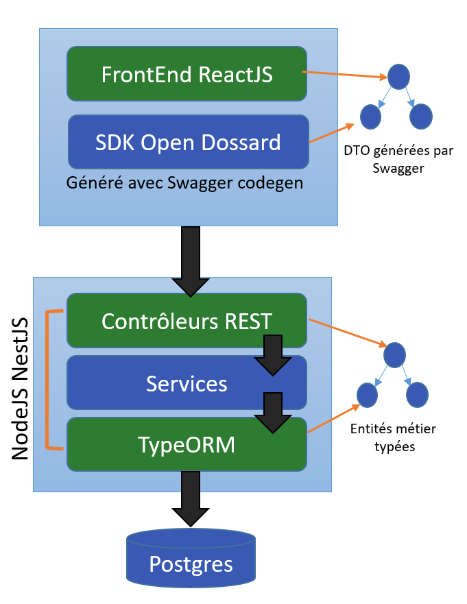

Avant toute chose, notez que cet article du blog de DNG Consulting énonce plus en détail les nombreux aspects techniques d'Open Dossard.
Open Dossard est développé en technologie JavaScript typé, que ce soit côté
client et côté serveur. Le backend est constitué
d'un serveur NodeJS tournant sur la pile ExpressJS,
le tout orchestré par NestJS. Un frontal
classique Nginx s'occupe
de rediriger les requêtes vers les sous-domaines app.opendossard.com et www.opendossard.com, le tout
en HTTPS.
La particularité
de cette architecture est de faire servir par Express (et on Nginx) les
pages statiques également. Nous avons souhaité pour des
raisons de simplicité créer une forte proximité entre le Front React et le
Back NodeJS.
Côté backend OpenDossard utilise un Framework dit "Progressif", NestJS. Tout
comme son concurrent Ts.ED, la particularité
de NestJS
est de proposer des briques logicielles semblables à ce qu'on 
pourrait retrouver dans le monde des microservices Java (ou le monde .NET)
avec une API typée utilisant Swagger.
Le typage intervient à tous
les niveaux applicatifs.
Côté serveur la base de données utilise un outil de mapping
objet/relationnel : TypeORM.
Les entités représentant le domaine
fonctionnel sont envoyés au client React par le biais
de l'API. L'association de TypeScript et de Swagger permet de générer un SDK
totalement typé utilisant l'outil d'appels XHR Fetch.
En cas de modification d'une méthode quelconque de l'API (paramètres, type,
...), swagger-codegen se charge de mettre à jour le code client pour
refléter la modification.
Pour faire un parallèle avec un monde qui vous est (peut-être) plus
familier, NestJS est l'équivalent de Spring Framework en Java.
TypeScript est le langage adopté côté ReactJS, c'est aussi celui du Backend. De nombreuses bibliothèques peuvent être partagées et la maintenance du code s'en trouve facilité. A titre d'exemple, MomentJS qui réalise la conversion et le formatage des dates est utilisé des deux côtés de la même façon. Des règles TsLint homogénéisent la manière de coder. TypeScript est surtout la garantie qu'un compilateur passera sur notre code avant toute exécution.
NestJS s'appuie sur un connecteur Swagger et des méta-données que le développeur fournit lors du codage. L'API Open Dossard est entièrement typée et la documentation complète est générée par Swagger à l'adresse suivante : https://app.opendossard.com/api
NestJS propose un plugin permettant de s'interfacer avec l'outil Passeport, assez populaire dans le monde JS. La sécurité d'Open Dossard s'appuie entièrement l'intégartion de Passeport avec le mode d'authentfication via jeton JWT. Ce mécanisme est totalement transparent côté frontend grâce à la génération du SDK. Le simple fait d'appeler la fonction api.service() réalise la propagation du jeton via les entêtes HTTP si l'utilisateur est déjà authentifié.